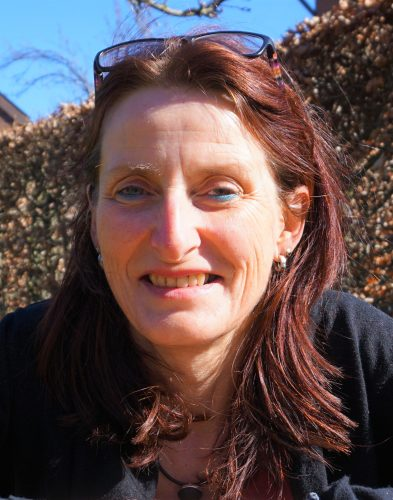

Zur Künstlerin
Annette Gerke-Bischoff
1964 in Frankfurt am Main geboren, lebt und arbeitet Annette Gerke-Bischoff in Gütersloh. Seit 2011 führt sie ein eigenes Atelier mit Schwerpunkt auf realistischer Malerei und verschiedenen Techniken.
Ihre Werke umfassen Mischtechnik, Aquarell, Öl, Acryl, Collage und Skulptur in Holz. Seit 2012 bietet sie Mal- und Kreativkurse für Kinder und Erwachsene an und ist seit 2016 Mitglied im Kunstverein Gruppe 13 e.V.
„Was du in anderen entzünden willst, muss in dir selbst brennen."Aurelius Augustinus
Ausbildung
- 1983Fachoberschule für Gestaltung, Bielefeld
- 2008Kunstakademie für freie Malerei und Grafik, Verl
- 2009Malerei und Grafik, IBKK Bochum
- 2015Diplom in Malerei und Grafik
Ausstellungen (Auswahl)
- 2025Gruppe 13, Haus Samson — „Schwarz weiß trifft bunt"
- 2024Gruppe 13 — „Magie des Lichts"
- 2023Gruppe 13 — „Auf den zweiten Blick"
- 2022„Kunst im Küsterhaus", Rheda-Wiedenbrück
- 2021Gruppe 13 — „Der blaue Planet"
- 2020ARKA Kulturwerkstatt, Zeche Zollverein, Essen
- 2019Einzelausstellung, Lange Nacht der Kunst, Gütersloh
- 2018Gemeinschaftsausstellung Giethoorn, Niederlande
- 2017„Auszeit", Kunsthaus Erkrath
- 2015Einzelausstellung, LWL Klinikum Gütersloh
Fortbildungen (Auswahl)
- 2025Radierung; Holzbildhauerei; Feuer und Eisen, Sommerakademie Borgholzhausen
- 2024Holzbildhauerei bei Johannes Zoller; Radierung bei Helmut Dohrmann
- 2017Kaltnadelradierung bei Era Freizon; Bildhauerei bei Karl Heinz Gies
- 2013„Freie Malerei" bei Thorsten Lehmann
- 2011„Von der Zeichnung bis zum Gemälde" bei Prof. Wlodzimierz Lajming
Atelier & Mitgliedschaften
- 2016Mitglied im Kunstverein Gruppe 13 e.V.
- 2012Mal- und Kreativkurse für Kinder und Erwachsene (siehe Kursangebote)
- 2011Eigenes Atelier, Rudolf-Harbig-Weg 3, Gütersloh — Schwerpunkt realistische Malerei